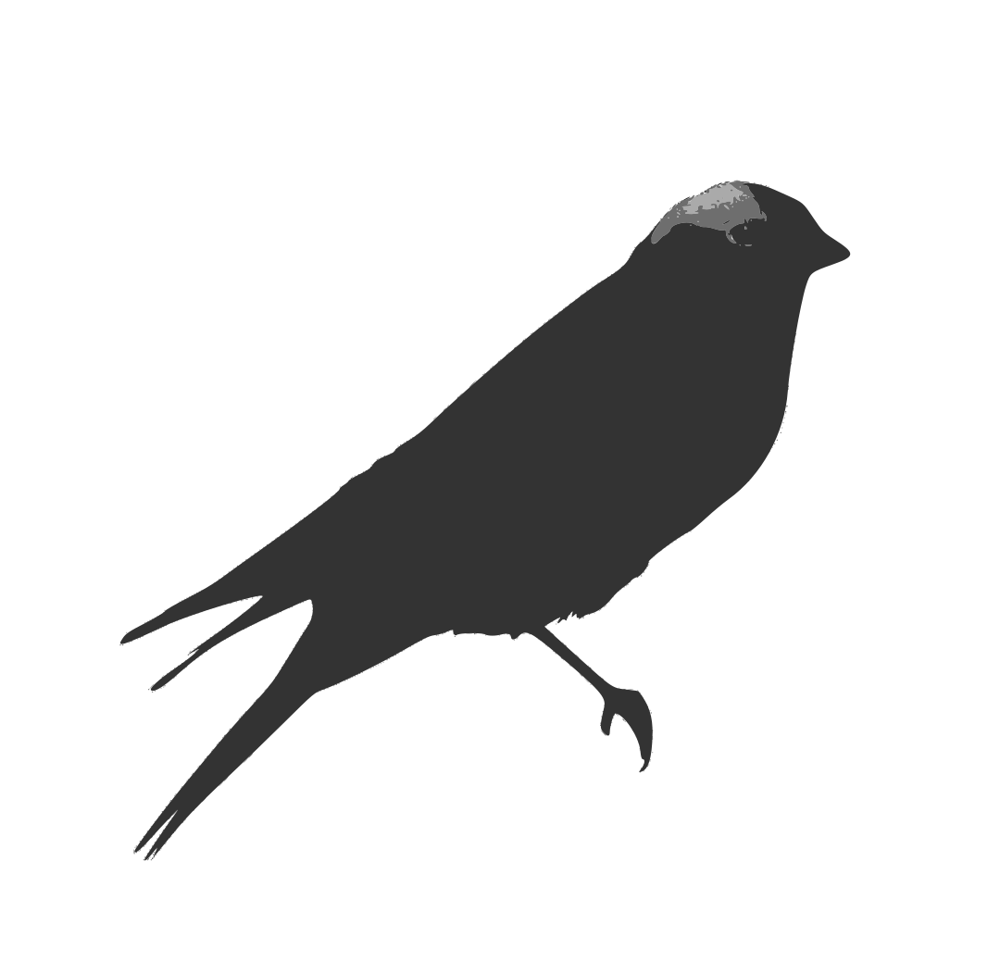
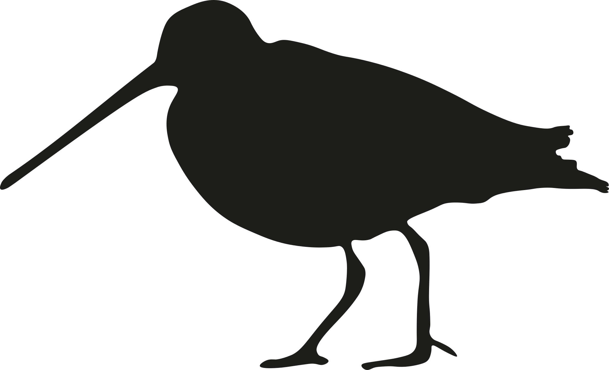
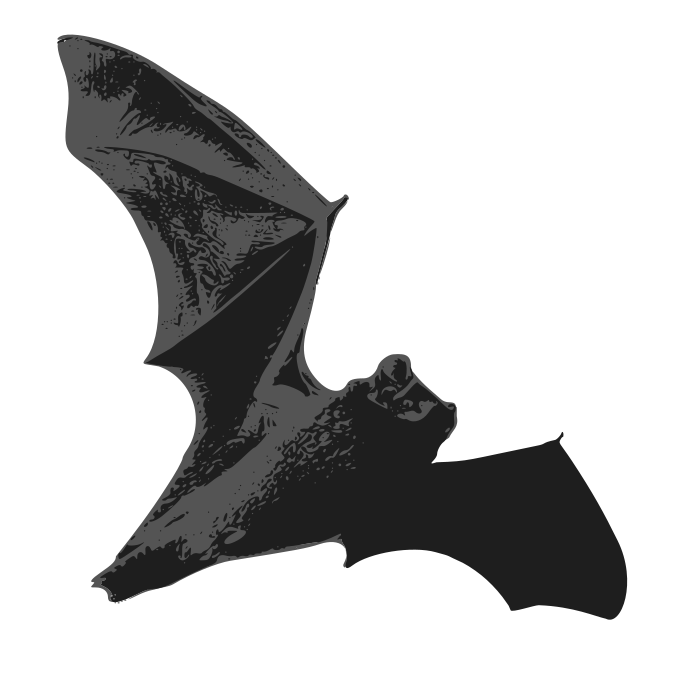

Preprints
Callaghan CT,
Campbell CJ, Widness J, Goldstein BR, Mesaglio T, Seltzer C, Iwane T, Guralnick R, Mason BM.
Guidelines and best practices for the scientific use of global iNaturalist data.
EcoEvoRxiv.
Vinod Anand, A;
Campbell, CJ; Loiselle, B; Guralnick, R.
Avian elevational migrants in India's Western Ghats challenge climatic constraint theory through broader environmental tolerances.
BioRXiv.
Peer-reviewed
21. Grady, E;
Campbell, CJ*; Callaghan, C; Guralnick, R*.
2026.
iNaturalist users exhibit distinct spatiotemporal sampling preferences, with implications for biodiversity science and project planning.
Citizen Science: Theory and Practice. 11(1): 3, 1–15.
20. Idec, J;
Campbell, CJ; Belitz, M; Vinod Anand, A; Guralnick, R.
2025.
Using citizen science data to estimate trait and climate drivers of daily activity patterns in temperate butterflies.
PLOS One. 20(11), e0335856.
19. Campbell, CJ; Nelson, DM; Nagel, J; Clerc, J; Weller, TJ; Weiringa, JG; Fraser, E; Longstaffe, FJ; Hale, AM; Lout, M; Pruitt, L; Guralnick, R; Vander Zanden, HB.
2025.
Migratory strategy is a key factor driving interactions at wind energy facilities in at-risk North American bats.
Ecology Letters. 28:e70202.
18. Wilson, J*; True, M*;
Campbell, CJ.
2025.
Autumn migration to higher latitudes in Seminole bats (
Lasiurus seminolus) redefines seasonal ranges: evidence from stable isotopes and fatality data from wind energy facilities.
Ecology & Evolution. 15:e71657.
17. Rubin, J;
Campbell, CJ; Carvalho, APS; St Laurent, RA; Crespo, GI; Pierson, TL; Guralnick, RP; Kawahara, AY.
2025.
Strong bat predation and weak environmental constraints predict longer moth tails.
Proceedings of the Royal Society B. 292(2046).

16. Campbell, CJ; Gardner, JH; Rushing, CS; Norvell, R; Farr, CM; Savides, K.
2025.
Quantifying rosy-finch migration with stable hydrogen isotope feather markers highlights the need for inter-state collaboration to reach conservation goals.
Avian Conservation and Ecology. 20(1):6.
15. Belitz, M;
Campbell, CJ; Drum, RM; Leuenberger, W; Morelli, TL; Nail, J; Shirey, V; Warner, S; Thogmartin, W; Zipkin, EF.
2025.
A case for assemblage-level conservation to address the biodiversity crisis.
Nature Reviews Biodiversity. 1, 134–143.

14. Carpenter, B*;
Campbell, CJ*; Fanning, A; McBride, M.
2024.
Migratory mixing of
Gallinago delicata (Wilson's snipe) in wintering areas highlights the need for international coordination for monitoring and management.
Ornithological Applications. duae064.
13. Campbell, CJ; Cheng, T; Akre, K; Adams, A; Solick, D; Bennett, A; Newman, C; Frick, W.
2024.
Maximizing benefits to bat populations through management of power line corridors.
Ecological Solutions and Evidence. 5(4), e12392.
12. Adams, AM; Trujillo, LA;
Campbell, CJ; Akre, KL; Arroyo-Cabrales, J; Burns, L; Coleman, JTH; Morris, KM; Ortega, J; Reichard, JD; Reichert, B; Segers, JL; Whitby, MD; Frick, WF.
2024.
The state of the bats in North America.
The Annals of the New York Academy of Sciences. 2024, 1–14.
11. Wieringa, JM; Nagel, J;
Campbell, CJ; Nelson, DM; Carstens, BC; Gibbs, HL.
2024.
Geographic source of bats killed at wind-energy facilities in the eastern United States.
PeerJ. 12, e16796.
10. Campbell, CJ; Barve, V; Belitz, M; Doby, JR; White, E; Seltzer, C; Di Cecco, G; Hurlbert, AH; Guralnick, R.
2023.
Identifying the identifiers: how iNaturalist facilitates collaborative, research-relevant data generation and why it matters for biodiversity science.
BioScience.
9. McCleery, R; Guralnick, R; Beatty, M; Belitz, M;
Campbell, CJ; Idec, J; Jones, M; Kang, Y; Potash, A; Fletcher, RJ.
2023.
Uniting experiments and big data to advance ecology and conservation.
Trends in Ecology & Evolution.
8. Wieringa, JG; Nagel, J;
Campbell, CJ; Nelson, DM; Carstens, BC; Gibbs, HL.
2023.
Combining stable isotopes, trace elements, and distribution models to assess the geographic origins of migratory bats.
Ecosphere. 14(6), e4588.
7. Smith, LM; Gore, JA; Doonan, TJ;
Campbell, CJ.
2022.
Tricolored bats at a southern range edge exhibit partial migration northward in autumn.
Movement Ecology. 10(1), 1–13.
6. Campbell, CJ; Nelson, DM; Gates, JE; Gibbs, HL; Stevenson, ER; Johnson, B; Nagel, J; Trott, R; Wieringa, JG; Vander Zanden, HB.
2022.
White-nose syndrome pathogen
Pseudogymnoascus destructans detected in migratory tree-roosting bats.
Journal of Wildlife Diseases.
5. Campbell, CJ; Fitzpatrick, MC; Vander Zanden, H; Nelson, DM.
2020.
Advancing interpretation of stable isotope assignment maps: comparing and summarizing origins of known-provenance migratory bats.
Animal Migration.
4. Katzner, TE; Nelson, DM; Diffendorfer, JE; Duerr, AE;
Campbell, CJ; Leslie, D; Vander Zanden, HB; Yee, JL; Sur, M; Huso, MMP; Braham, MA; Morrison, ML; Loss, SR; Poessel, SA; Conkling, TJ; Miller, TA.
2019.
Wind energy: an ecological challenge.
Science. 366(6470):1206–1207.
3. Nelson, DM; Nagel, J; Trott, R;
Campbell, CJ; Pruitt, L; Good, RE; Iskali, G; Gugger, PF.
2018.
Carcass age and searcher identity affect morphological assessment of sex of bats.
The Journal of Wildlife Management. 82(8), 1582–1587.

2. Campbell, CJ; Nelson, DM; Ogawa, NO; Chikaraishi, Y; Ohkouchi, N.
2017.
Trophic position and dietary breadth of bats revealed by nitrogen isotopic composition of amino acids.
Scientific Reports. 7:15932.
1. Roman, J; Altman, I; Dunphy-Daly, M;
Campbell, C; Jasny, M; Read, A.
2013.
The Marine Mammal Protection Act at 40: status, recovery, and future of U.S. marine mammals.
The Annals of the New York Academy of Sciences. 1286:29–49.